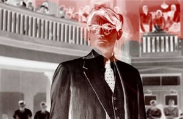

Did You Wonder Who Fired the Gun?

Travis WilkersonUSA 2017 – 90 min – Englisch
Deutsche Premiere
B+K+S+T: Travis Wilkerson
P: Creative Agitation
Alabama,
1946. Der Südstaaten-Rassist S. E. Branch und
Urgroßvater des Regisseurs erschoss den Schwarzen Bill Spann,
als der in den Laden von Branch kam. Der Mord wurde in der
Familie totgeschwiegen. Als Wilkerson sich daran machte, das
Geheimnis aufzudecken, wird ihm vorgeworfen, Schande über die
Familie zu bringen.
Detektivische Ermittlung, Familienbekenntnisse, Selbstbefragung
und Rassenreflexion begegnen sich in einem
hybrid-dokumentarischen und dekonstruierenden Film.
freitag 6 okt 22.30 uhr werkstattkino
Travis Wilkerson *
1969 in Denver, USA, wuchs in den Bergen von Colorado und Montana
auf. Er studierte Sprachen und Literatur, bevor er Filmemacher
wurde. Eine Begegnung mit dem legendären kubanischen Filmemacher
Santiago Alvarez beeinflusste ihn maßgeblich. Seitdem macht er
Filme in der Tradition des „Dritten Kinos”.
Filme An Injury to One 2002 – Who Killed Cock Robin? 2005 – Proving Ground 2009
Distinguished Flying Cross 2011 – Far from Afghanistan 2012 (8. UX) – Machine Gun or Typewriter? 2015 (10. UX)
Filme An Injury to One 2002 – Who Killed Cock Robin? 2005 – Proving Ground 2009
Distinguished Flying Cross 2011 – Far from Afghanistan 2012 (8. UX) – Machine Gun or Typewriter? 2015 (10. UX)